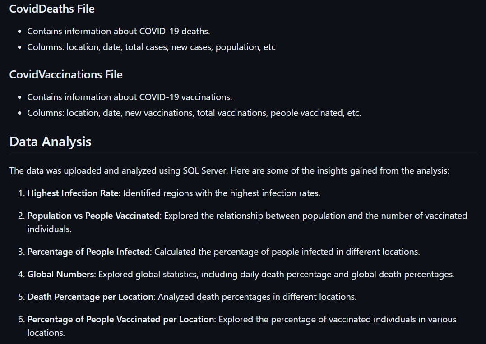

The Amazon Reviews Sentiment Analysis project delves into customer emotions within their Amazon product reviews.
I used natural language processing, to uncover valuable insights into diverse product perceptions. Utilizing the
NLTK library, I designed a model to detect emotions and classify them as positive, negative, or neutral. Enhancing
precision, I integrated NLTK's VADER and Huggingface's Roberta Transformers tools. This approach significantly improved
emotion prediction accuracy, yielding impressive results.

In this project, I sourced data from Our World in Data - COVID-19 Deaths, which I divided into two Excel files,
CovidDeaths and CovidVaccinations. These files contained essential details such as location, date, cases, population,
and vaccination data. Leveraging SQL Server, I conducted comprehensive analysis, uncovering insights like identifying
regions with high infection rates, exploring population-vaccination dynamics, calculating infection percentages, and
more. I optimized data interpretation by creating intuitive views within the SQL Server database.

I created an interactive Power BI dashboard to dive into ATLIQ Hardware's sales data. I used Power Query to refine the
data, played with colors for visual appeal, and arranged visuals thoughtfully. This dashboard helps uncover sales trends
and informs decisions. It also highlights the top 5 customers and products generating the highest revenue, offering a
clear view of ATLIQ Hardware's success factors. MySQL was also used for data management, adding accuracy.

This project delves into a Swiggy-inspired dataset using SQL queries to uncover insights about user behavior, restaurant
performance, and food preferences. The dataset comprises three core entities: users, food, and restaurants, with their
interactions managed by the orders table. By addressing a series of key questions, this study aims to provide a
comprehensive understanding of the data. I answered several questions related to user behavior such as,
Identify customers who have never placed an order, Calculate the average price per dish, Analyze the month-over-month revenue growth of Swiggy and others.
Throughout the project i documented my approach and created a data dictionary as well

In this data cleaning project, I undertook the task of refining and improving the quality of a dataset using powerful
SQL techniques. The dataset, derived from Nashville housing data, was initially fraught with inconsistencies,
duplicates, and various anomalies that hampered its utility and reliability. Through a comprehensive sequence of SQL
queries and operations, I systematically addressed these challenges to ensure that the dataset was accurate,
standardized, and ready for insightful analysis.

I created a interactive Excel Dashboard where we can filter through Marital status, Region and Education. The Data set contains
Data related to a set of individuals whether they buy a bike or not. This can depend on various factors like income,
commute distance and age of the person. We try to analyze this using all the factors available.